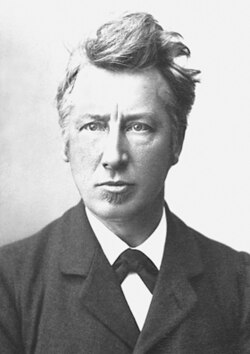

| Nobel Prize in Chemistry | |
|---|---|
 | |
| Awarded for | Outstanding contributions in chemistry |
| Location | Stockholm, Sweden |
| Presented by | Royal Swedish Academy of Sciences |
| Reward | 11 million SEK (2024)[1] |
| First award | 1901 |
| Most recent recipients | Susumu Kitagawa, Richard Robson and Omar M. Yaghi (2025) |
| Most awards | Frederick Sanger and Karl Barry Sharpless (2) |
| Website | nobelprize.org/chemistry |
The Nobel Prize in Chemistry[a] is awarded annually by the Royal Swedish Academy of Sciences to scientists in the various fields of chemistry. It is one of the five Nobel Prizes established by the will of Alfred Nobel in 1895, awarded for outstanding contributions in chemistry, physics, literature, peace, and physiology or medicine. This award is administered by the Nobel Foundation and awarded by the Royal Swedish Academy of Sciences on proposal of the Nobel Committee for Chemistry, which consists of five members elected by the academy. The award is presented in Stockholm at an annual ceremony on December 10, the anniversary of Nobel's death.
The first Nobel Prize in Chemistry was awarded in 1901 to Jacobus Henricus van 't Hoff, of the Netherlands, "for his discovery of the laws of chemical dynamics and osmotic pressure in solutions".[2] From 1901 to 2025, the award has been bestowed on a total of 198 individuals.[3] Frederick Sanger and K. Barry Sharpless both won twice. The 2025 Nobel Prize in Chemistry was awarded to Susumu Kitagawa, Richard Robson and Omar M. Yaghi "for the development of metal–organic frameworks". As of 2022, eight women had won the prize: Marie Curie (1911), her daughter Irène Joliot-Curie (1935), Dorothy Hodgkin (1964), Ada Yonath (2009), Frances Arnold (2018), Emmanuelle Charpentier and Jennifer Doudna (2020), and Carolyn R. Bertozzi (2022).[4] Marie Curie also won the Nobel Prize in Physics in 1903, making her the only person to win in two different sciences.
Background
Nobel stipulated in his last will and testament that his money be used to create a series of prizes for those who confer the "greatest benefit on mankind" in physics, chemistry, peace, physiology or medicine, and literature.[5][6] Though Nobel wrote several wills during his lifetime, the last was written a little over a year before he died, and signed at the Swedish-Norwegian Club in Paris on November 27, 1895.[7][8] Nobel bequeathed 94% of his total assets, 31 million Swedish kronor (US$198 million, €176 million in 2016), to establish and endow the five Nobel Prizes.[9] Due to the level of skepticism surrounding the will, it was not until April 26, 1897, that it was approved by the Storting (Norwegian Parliament).[10][11] The executors of his will were Ragnar Sohlman and Rudolf Lilljequist, who formed the Nobel Foundation to take care of Nobel's fortune and organize the prizes.
The members of the Norwegian Nobel Committee that were to award the Peace Prize were appointed shortly after the will was approved. The prize-awarding organizations followed: the Karolinska Institutet on June 7, the Swedish Academy on June 9, and the Royal Swedish Academy of Sciences on June 11.[12][13] The Nobel Foundation then reached an agreement on guidelines for how the Nobel Prize should be awarded. In 1900, the Nobel Foundation's newly created statutes were promulgated by King Oscar II.[11][14][15] According to Nobel's will, The Royal Swedish Academy of Sciences was to award the Prize in Chemistry.[15]
Award ceremony
The committee and institution serving as the selection board for the prize typically announce the names of the laureates in October. The prize is then awarded at formal ceremonies held annually on December 10, the anniversary of Alfred Nobel's death. Later the Nobel Banquet is held in Stockholm City Hall.
Nomination and selection
{kind=link}

The Nobel Laureates in chemistry are selected by a committee that consists of five members elected by the Royal Swedish Academy of Sciences. In its first stage, several thousand people are asked to nominate candidates. These names are scrutinized and discussed by experts until only the laureates remain. This slow and thorough process is arguably what gives the prize its importance.
Forms are sent to about three thousand selected individuals to invite them to submit nominations. The names of the nominees are never publicly announced, and neither are nominees told that they have been considered for the Prize. Nomination records are sealed for fifty years, but in practice, some nominees do become known. It is also common for publicists to make such a claim – founded or not.
The nominations are screened by the committee, and a list is produced of approximately two hundred preliminary candidates. This list is forwarded to selected experts in the field. They remove all but approximately fifteen names. The committee then submits a report with recommendations to the appropriate institution.
While posthumous nominations are not permitted, awards can occur if the individual dies in the months between the nomination and the decision of the prize committee.
The award in chemistry requires that the significance of achievements being recognized is "tested by time". In practice, it means that the lag between the discovery and the award is typically on the order of 20 years and can be much longer. As a downside of this approach, not all scientists live long enough for their work to be recognized.
A maximum of three laureates and two different works may be selected. The award can be given to a maximum of three recipients per year.
Prizes
A Chemistry Nobel Prize laureate earns a gold medal, a diploma bearing a citation, and a sum of money.[16]
Nobel Prize medals
The medal for the Nobel Prize in Chemistry is identical in design to the Nobel Prize in Physics medal.[17][18] The reverse of the physics and chemistry medals depict the Goddess of Nature in the form of Isis as she emerges from clouds holding a cornucopia. The Genius of Science holds the veil which covers Nature's 'cold and austere face'.[18] It was designed by Erik Lindberg and is manufactured by Svenska Medalj in Eskilstuna.[18] It is inscribed "Inventas vitam iuvat excoluisse per artes" ("It is beneficial to have improved [human] life through discovered arts") an adaptation of "inventas aut qui vitam excoluere per artes" from line 663 from book 6 of the Aeneid by the Roman poet Virgil.[19] A plate below the figures is inscribed with the name of the recipient. The text "REG. ACAD. SCIENT. SUEC." denoting the Royal Swedish Academy of Sciences is inscribed on the reverse.[18]
Nobel Prize diplomas
Nobel laureates receive a diploma directly from the hands of the King of Sweden. Each diploma is uniquely designed by the prize-awarding institutions for the laureate that receives it. The diploma contains a picture and text that states the name of the laureate and normally a citation of why they received the prize.[20]
Award money
At the awards ceremony, the laureate is given a document indicating the award sum. The amount of the cash award may differ from year to year, based on the funding available from the Nobel Foundation. For example, in 2009 the total cash awarded was 10 million SEK (US$1.4 million),[21] but in 2012, the amount was 8 million Swedish Krona, or US$1.1 million.[22] If there are two laureates in a particular category, the award grant is divided equally between the recipients, but if there are three, the awarding committee may opt to divide the grant equally, or award half to one recipient and a quarter to each of the two others.[23][24][25][26]
Nobel laureates in chemistry
Scope of award
In recent years, the Nobel Prize in Chemistry has drawn criticism from chemists who feel that the prize is more frequently awarded to non-chemists than to chemists.[27] In the 30 years leading up to 2012, the Nobel Prize in Chemistry was awarded ten times for work classified as biochemistry or molecular biology, and once to a materials scientist. In the ten years leading up to 2012, only four prizes were awarded for work strictly in chemistry.[27] Commenting on the scope of the award, The Economist explained that the Royal Swedish Academy of Sciences is bound by Nobel's bequest, which specifies awards only in physics, chemistry, literature, medicine, and peace. Biology was in its infancy in Nobel's day and no award was established. The Economist argued there is no Nobel Prize for mathematics either, another major discipline, and added that Nobel's stipulation of no more than three winners is not readily applicable to modern physics, where progress is typically made through huge collaborations rather than by individuals alone.[28]
In 2020, Ioannidis et al. reported that half of the Nobel Prizes for science awarded between 1995 and 2017 were clustered in just a few disciplines within their broader fields. Atomic physics, particle physics, cell biology, and neuroscience dominated the two subjects outside chemistry, while molecular chemistry was the chief prize-winning discipline in its domain. Molecular chemists won 5.3% of all science Nobel Prizes during this period.[29]
See also
- List of Nobel laureates in Chemistry
- Louisa Gross Horwitz Prize
- List of chemistry awards
- List of Nobel laureates
- Nobel laureates by country
- Priestley Medal
- Wolf Prize in Chemistry
- List of female nominees for the Nobel Prize
Notes
References
Notes
^A. Until 2025
Specific
- ^ "The Nobel Prize amounts". The Nobel Prize. Archived from the original on 20 July 2018. Retrieved 9 October 2024.
- ^ "The Nobel Prize in Chemistry 1901". Nobel Foundation. Archived from the original on 24 October 2008. Retrieved 6 October 2008.
- ^ "Facts on the Nobel Prize in Chemistry". nobelprize.org. Archived from the original on 8 March 2017. Retrieved 5 October 2023.
- ^ "The Nobel Prize in Chemistry". The Nobel Prize. Archived from the original on 25 February 2024. Retrieved 6 October 2022.
- ^ "History – Historic Figures: Alfred Nobel (1833–1896)". BBC. Archived from the original on 27 December 2019. Retrieved 15 January 2010.
- ^ "Guide to Nobel Prize". Britannica. Archived from the original on 13 October 2014. Retrieved 10 June 2013.
- ^ Ragnar Sohlman: 1983, Page 7
- ^ von Euler, U.S. (6 June 1981). "The Nobel Foundation and its Role for Modern Day Science". Die Naturwissenschaften. Springer-Verlag. Archived from the original (PDF) on 14 July 2011. Retrieved 21 January 2010.
- ^ "The Will of Alfred Nobel" Archived 4 June 2011 at the Wayback Machine, nobelprize.org. Retrieved 6 November 2007.
- ^ "The Nobel Foundation – History". Nobelprize.org. Archived from the original on 9 January 2010. Retrieved 15 January 2010.
- ^ a b Agneta Wallin Levinovitz: 2001, Page 13
- ^ "Nobel Prize History —". Infoplease. 13 October 1999. Archived from the original on 26 April 2013. Retrieved 15 January 2010.
- ^ "Nobel Foundation (Scandinavian organization)". Britannica. Archived from the original on 14 May 2013. Retrieved 10 June 2013.
- ^ AFP, "Alfred Nobel's last will and testament" Archived 9 October 2009 at the Wayback Machine, The Local (5 October 2009): accessed 20 January 2010.
- ^ a b "Nobel Prize Archived 29 April 2015 at the Wayback Machine" (2007), in Encyclopædia Britannica, accessed 15 January 2009, from Encyclopædia Britannica Online:
After Nobel's death, the Nobel Foundation was set up to carry out the provisions of his will and to administer his funds. In his will, he had stipulated that four different institutions—three Swedish and one Norwegian—should award the prizes. From Stockholm, the Royal Swedish Academy of Sciences confers the prizes for physics, chemistry, and economics, the Karolinska Institute confers the prize for physiology or medicine, and the Swedish Academy confers the prize for literature. The Norwegian Nobel Committee based in Oslo confers the prize for peace. The Nobel Foundation is the legal owner and functional administrator of the funds and serves as the joint administrative body of the prize-awarding institutions, but it is not concerned with the prize deliberations or decisions, which rest exclusively with the four institutions.
- ^ Tom Rivers (10 December 2009). "2009 Nobel Laureates Receive Their Honors | Europe". .voanews.com. Archived from the original on 4 October 2012. Retrieved 15 January 2010.
- ^ "A unique gold medal". Nobel Foundation. Archived from the original on 11 April 2017. Retrieved 20 June 2023.
- ^ a b c d "The Nobel Prize medals in physics and chemistry". Nobel Foundation. Archived from the original on 31 March 2023. Retrieved 20 June 2023.
- ^ "The Nobel Prize medal in physiology or medicine". Nobel Foundation. Archived from the original on 16 April 2023. Retrieved 20 June 2023.
- ^ "The Nobel Diplomas". Nobelprize.org. Archived from the original on 13 April 2015. Retrieved 24 August 2014.
- ^ "The Nobel Prize Amounts". Nobelprize.org. Archived from the original on 20 July 2018. Retrieved 24 August 2014.
- ^ "Nobel prize amounts to be cut 20% in 2012". CNN. 11 June 2012. Archived from the original on 9 July 2012.
- ^ Sample, Ian (5 October 2009). "Nobel prize for medicine shared by scientists for work on ageing and cancer | Science | guardian.co.uk". London: Guardian. Archived from the original on 13 January 2020. Retrieved 15 January 2010.
- ^ Sample, Ian (7 October 2008). "Three share Nobel prize for physics | Science | guardian.co.uk". London: Guardian. Archived from the original on 1 June 2019. Retrieved 10 February 2010.
- ^ David Landes (12 October 2009). "Americans claim Nobel economics prize – The Local". Thelocal.se. Archived from the original on 20 November 2012. Retrieved 15 January 2010.
- ^ "The 2009 Nobel Prize in Physics – Press Release". Nobelprize.org. 6 October 2009. Archived from the original on 30 May 2013. Retrieved 10 February 2010.
- ^ a b Hoffmann, Roald (9 February 2012). "What, Another Nobel Prize in Chemistry to a Nonchemist?". Angewandte Chemie International Edition. 51 (8): 1734–1735. Bibcode:2012ACIE...51.1734H. doi:10.1002/anie.201108514. PMID 22323188.
- ^ "The Economist explains: Why is the Nobel prize in chemistry given for things that are not chemistry?". The Economist. 7 October 2015. Archived from the original on 11 October 2015. Retrieved 13 October 2015.
- ^ Ioannidis, John; Cristea, Ioana-Alina; Boyack, Kevin (29 July 2020). "Work honored by Nobel prizes clusters heavily in a few scientific fields". PLOS ONE. 15 (7) e0234612. Bibcode:2020PLoSO..1534612I. doi:10.1371/journal.pone.0234612. PMC 7390258. PMID 32726312.
General
- "All Nobel Laureates in Chemistry". Nobelprize.org. Archived from the original on 3 June 2016. Retrieved 10 October 2019.
External links
- The Nobel Prize in Chemistry at the Nobel Foundation.
- The Nobel Prize Medal for Physics and Chemistry at the Nobel Foundation.
- "Nobel Prize for Chemistry. Front and back images of the medal. 1954". "Source: Photo by Eric Arnold. Ava Helen and Linus Pauling Papers. Honors and Awards, 1954h2.1." "All Documents and Media: Pictures and Illustrations", Linus Pauling and The Nature of the Chemical Bond: A Documentary History, The Valley Library, Oregon State University. Accessed 7 December 2007.
- Graphics: National Chemistry Nobel Prize shares 1901–2009 by citizenship at the time of the award and by country of birth. From J. Schmidhuber (2010), Evolution of National Nobel Prize Shares in the 20th Century at arXiv:1009.2634v1
- "What the Nobel Laureates Receive" – Featured link in "The Nobel Prize Award Ceremonies".